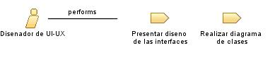

|
| El Diseñador de UI/UX se encarga de crear la interfaz de usuario de un proyecto de software, asegurando una experiencia de usuario intuitiva y atractiva. |
| Synonyms: Diseñador de Experiencia de Usuario (UX/UI Designer) |
|
Relationships
 |
| Primary Performs |
|
| Modifies |
|
Main Description
| El Diseñador de UI/UX es responsable de diseñar la interfaz de usuario de un proyecto de software, tanto en términos de
apariencia visual como de usabilidad. Su objetivo principal es crear una experiencia de usuario óptima, considerando
aspectos como la navegación, la interacción y la estética visual. El Diseñador de UI/UX trabaja en colaboración con el
equipo de desarrollo y los stakeholders para comprender los requisitos y objetivos del proyecto, y luego traducirlos en
diseños visuales atractivos y funcionales. Además, el Diseñador de UI/UX realiza pruebas y recopila feedback de los
usuarios para iterar y mejorar continuamente la interfaz de usuario. |
Staffing
| Skills | Conocimientos solidos sobre diseño de interfaces, Comprension de los terminos basicos de usabilidad, Comunicacion efectiva. |
| Assignment Approaches | El Diseñador de UI/UX puede ser asignado en diferentes etapas del proyecto, desde el inicio para definir la arquitectura de
información y los flujos de navegación, hasta la fase de diseño visual y desarrollo de prototipos. |
| Synonyms | Diseñador de Experiencia de Usuario (UX/UI Designer) |
Key Considerations
| Comprender necesidades, Diseño de interfaces, Estetica y funcionalidad, Restricciones tecnicas, Usabilidad. |
|